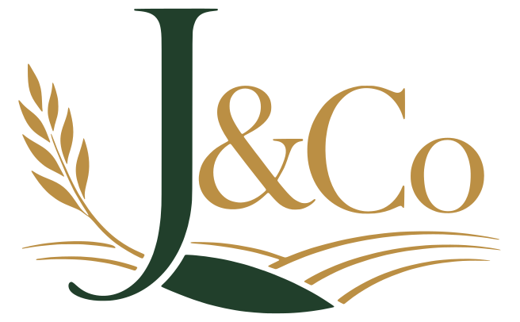

1. Customer discovery
Interviews with growers and landowners about what they buy, how often, at what price, and what goes wrong.

Feasibility research
Better-sourced maintenance parts and consumables for the people who keep farms running, starting from real buyer needs.
Status: FEASIBILITY RESEARCH. No products are for sale. No supplier, manufacturing, distribution, or customer agreement exists, and no one is named here as a partner or customer.
Poultry houses, cattle operations, and land-work crews replace the same wear parts year after year. Price, lead time, and quality for these parts can vary widely. John & Co. is testing whether a veteran-led South Carolina company can source selected items more dependably, and sell or install them alongside its land and property services.
Rankings are research judgments until real purchasing information is collected.
How a product would move forward
Interviews with growers and landowners about what they buy, how often, at what price, and what goes wrong.
Written specifications, compatibility, packaging, and quality standards.
Qualified manufacturers, possibly with an experienced product-development and sourcing firm, compared on quality and terms.
Sample testing and full landed cost, including freight, duties, and storage.
Proceed only if buyer demand and margins hold under conservative assumptions.
No purchase orders, inventory, or manufacturing commitments are made before a go decision.
Commercialization strategy · Feasibility research
John & Co. would sell under its own name and keep its customer relationships. Any product line would sit beside its land-care work, not replace it.
John & Co. may work with an experienced product-development and sourcing firm to qualify manufacturers, produce samples, and estimate landed cost. No agreement, fee, exclusivity, equity, or IP assignment exists.
The first gate is customer discovery: grower interviews that confirm repeat buying, real quantities, prices paid, and supplier problems. That gate requires no spending.
A product moves forward only if margins hold after freight, duties, minimum orders, and sample costs. Any sample budget needs the owner’s approval.
Research only. This section describes an approach under study, not an operating business line.
Tell us which parts you replace most and where supply lets you down. Your answers shape what we study. Talking with us creates no obligation.